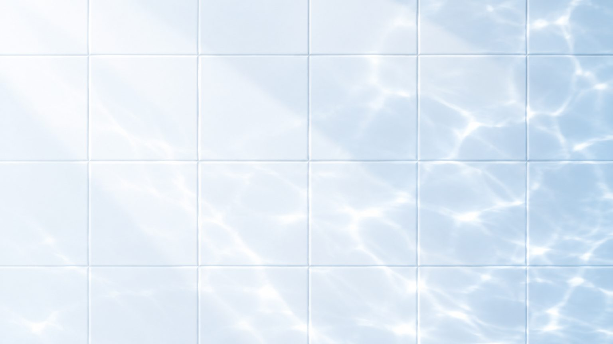

Bathroom safety
How to make a bathroom safe for elderly parents: a checklist

In short
Start where bathroom falls usually begin: getting in and out of the shower, standing up from the toilet and the night-time walk to the room. Fit fixed grab bars at those points, add a seat for showering, light the route at night, clear slip and trip hazards, and review the setup whenever your parent's health changes.
In October 2026 the World Health Organization updated its fact sheet. It counts about 842,000 deaths from falls worldwide in 2023, and roughly 71% of them were people aged 60 or older. The US CDC figures add a detail every family should hear: more than one in four older people fall each year, and fewer than half tell their doctor. A fall at home often goes unreported until it happens again, and the bathroom, with wet floors, hard edges and a door that is usually closed, is where a fall is hardest to recover from.
Why do most bathroom safety guides miss the point?
Most bathroom content is written for people planning a renovation: tile choices, vanity styles, a new shower screen. Very little of it talks to the two people who matter here. One is the older person who has to use the room every day, often at night and often alone. The other is the adult child or carer who is trying to make changes without making a parent feel watched or managed. A checklist only works if it fits how your parent actually uses the room, and if they agree to it.
What does a typical risk look like?
Take a 78-year-old mother who lives alone. Her knees ache when she gets up from a low seat, she takes a diuretic and gets up twice a night, and she still showers standing because the shower has a glass screen and no seat. Her son visits at weekends. None of this looks dangerous during a daytime visit. The danger is at 3 a.m., half awake, in a dim room, standing up from a toilet with nothing to push against, then turning on a damp floor. That is the situation the checklist below is built for.
Which parts of the bathroom should you check?
Walk through the room with your parent and look at each zone in the order they use it.
| Zone | Common risk | What usually helps |
|---|---|---|
| Route from bedroom | Dark corridor, rugs, door threshold | Night lights at floor level, remove loose rugs, a light switch reachable from the bed |
| Door | Opens inward, so a fallen person can block it | Consider an outward-opening or sliding door, and a lock that opens from outside |
| Floor | Wet tiles, loose mats | Slip-resistant surface or a fixed non-slip mat, wipe up water straight away |
| Toilet | Seat too low, nothing to push up from | Grab bar on the side wall, a flip-up rail on the open side, or a rise-assist device |
| Shower | Standing on one leg to wash, stepping over a lip | A seat for showering, a grab bar at the entry, a hand shower within reach |
| Basin | Leaning on the basin edge for balance | A basin rail or grab bar beside the basin, a mirror at seated height |
| Emergency | Nobody knows a fall has happened | A call button or phone reachable from the floor, an agreed check-in routine |
In what order should you make the changes?
- Watch first. Ask your parent to show you how they use the shower and toilet. Note where they reach for a towel rail, a basin edge or a wall to steady themselves. Those are the places that need a real support.
- Fix the quick wins this week. Clear the floor, add night lights, move toiletries to between waist and shoulder height, and put a non-slip mat in the shower.
- Fit fixed supports. Install grab bars into solid wall or proper backing. Towel rails, soap holders and suction-cup handles are not built to take a person's weight. Our guide on installation guide covers heights and shapes.
- Sort out seating in the shower. A fold-down seat or a seated shower unit lets your parent wash without balancing. See our comparison of a seated shower and a shower chair.
- Deal with the toilet height. If standing up from the toilet is a struggle, a rail may be enough. If knees or hips are the problem, look at a rise assist.
- Get an assessment. In the UK the NHS advice is to consider grab rails and non-slip mats, and a falls service or a council care needs assessment can check the home. Other countries have similar occupational therapy services. An assessor sees things families miss.
- Review after any change in health. A hospital stay, a new medicine or a minor fall is a signal to walk through the room again.
How do you talk to a parent who does not want hospital-style fittings?
Resistance is common and reasonable. Many older people link grab bars with illness and fear the bathroom will look like a ward. Three approaches tend to work. Frame changes around independence: a support means they can keep showering without help. Let them choose finishes and positions, since white bars on a white wall can look like a towel rail. And start with the one change that solves the problem they already mention, such as getting up from the toilet, rather than presenting a full list.
What should carers and buyers check before buying products?
- Load rating, and whether it applies to the bar or to the bar plus its fixings.
- Grip diameter and surface: a bar should be easy to close a hand around and not slippery when wet.
- Night visibility: a contrasting colour or a luminous section helps at night.
- Cleaning: seats and pads should come off or wipe down easily.
- Fit with the room: measure wall space, the toilet centreline and the shower size before ordering.
Which products cover these points?
MULAN is a Foshan factory that makes aging-friendly bathroom products for distributors, OEM brands and care operators. Its grab bars include L-shaped models with a 36 mm resin outer tube over a built-in aluminium alloy tube, plus luminous versions that glow after absorbing light. For whole rooms, the bathroom package combines seating, rails and lighting. If you are sourcing for a store or a care project, ask on WhatsApp for specifications, samples and terms.
A safe bathroom for an older parent is not one big renovation. It is a short list of changes made in the right order, checked with the person who uses the room, and revisited when their health changes. Start with the places your parent already reaches for support.